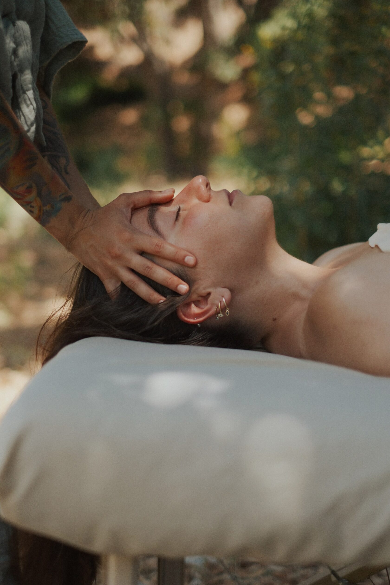
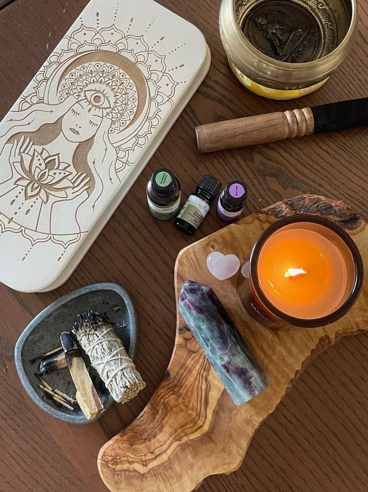

Become a certified Soul Touch practitioner.Conviértete en terapeuta Soul Touch certificada.Torna-te terapeuta Soul Touch certificada.Werde zertifizierte Soul Touch Praktikerin.Diventa terapeuta Soul Touch certificata.Devenez praticienne Soul Touch certifiée.Стать сертифицированной практикой Soul Touch.Стати сертифікованою практикою Soul Touch.
A full online training.Una formación online completa.Uma formação online completa.Eine vollständige Online-Ausbildung.Una formazione online completa.Une formation en ligne complète.Полное онлайн-обучение.Повне онлайн-навчання.

6 pillars that hold the entire practice.6 pilares que sostienen toda la práctica.6 pilares que sustentam toda a prática.6 Säulen, die die ganze Praxis tragen.6 pilastri che sostengono l’intera pratica.6 piliers qui soutiennent toute la pratique.6 столпов, на которых стоит вся практика.6 стовпів, на яких стоїть уся практика.
Nervous-system regulationRegulación del SNRegulação do SNNervensystem-RegulationRegolazione del SNRégulation du SNРегуляция НСРегуляція НС
Polyvagal-informed touch. Recognising arousal, settling, dorsal collapse. How to bring a body back to ventral safety.Tacto informado por la teoría polivagal. Reconocer activación, calma, colapso dorsal. Cómo devolver al cuerpo a la seguridad ventral.Toque informado pela teoria polivagal. Reconhecer ativação, calma, colapso dorsal.Polyvagal-informierte Berührung.Tocco informato dalla teoria polivagale.Toucher informé par la théorie polyvagale.Поливагальный подход к прикосновению.Поліваґальний підхід до дотику.
Deep fascia tissue workTrabajo profundo de fasciaTrabalho profundo de fásciaTiefe FaszienarbeitLavoro profondo sulla fasciaTravail profond du fasciaГлубокая работа с фасциейГлибока робота з фасцією
Reading the body’s structural map. Slow, structural touch that meets tissue where it is, not where you wish it were.Leer el mapa estructural del cuerpo. Tacto lento y estructural que se encuentra con el tejido donde está.Ler o mapa estrutural do corpo.Den strukturellen Körper-Map lesen.Leggere la mappa strutturale del corpo.Lire la carte structurelle du corps.Чтение структурной карты тела.Читання структурної карти тіла.
Breathing awarenessConciencia respiratoriaConsciência respiratóriaAtembewusstseinConsapevolezza del respiroConscience du souffleОсознанное дыханиеУсвідомлене дихання
Your own breath as the most underrated tool. Co-regulation through stillness. The work that happens when nothing is happening.Tu respiración como la herramienta más subestimada. Corregulación a través de la quietud.A tua respiração como ferramenta mais subestimada.Dein eigener Atem als unterschätztes Werkzeug.Il tuo respiro come strumento sottovalutato.Votre souffle comme outil sous-estimé.Своё дыхание как недооценённый инструмент.Своє дихання як недооцінений інструмент.
Presence & somatic approachPresencia y enfoque somáticoPresença e abordagem somáticaPräsenz & somatischer AnsatzPresenza e approccio somaticoPrésence & approche somatiqueПрисутствие и соматический подходПрисутність та соматичний підхід
Listening with hands. Reading tension, hesitation, release. Following the body’s lead instead of imposing yours.Escuchar con las manos. Leer tensión, vacilación, soltura. Seguir al cuerpo en vez de imponer.Escutar com as mãos.Mit den Händen zuhören.Ascoltare con le mani.Écouter avec les mains.Слушать руками.Слухати руками.
Boundaries and ethicsLímites y éticaLimites e éticaGrenzen und EthikConfini ed eticaLimites et éthiqueГраницы и этикаМежі та етика
The professional architecture that makes touch safe. Consent, language, room setup, aftercare. Non-sexual by clear design.La arquitectura profesional que hace seguro el tacto. Consentimiento, lenguaje, setup. NON-sexual por diseño claro.A arquitetura profissional que torna o toque seguro.Die professionelle Architektur, die Berührung sicher macht.L’architettura professionale che rende il tocco sicuro.L’architecture professionnelle qui rend le toucher sûr.Профессиональная архитектура, делающая прикосновение безопасным.Професійна архітектура, що робить дотик безпечним.
Your own styleTu propio estiloO teu próprio estiloDein eigener StilIl tuo stileVotre propre styleСвой стильСвій стиль
How to hold sessions, structure pricing, write to clients, build a calendar that doesn’t exhaust you. The business behind the art.Cómo dar sesiones, estructurar precios, escribir a clientes, construir un calendario que no te queme. El negocio detrás del arte.Como dar sessões, estruturar preços, escrever a clientes.Wie man Sitzungen hält, Preise strukturiert, an Kunden schreibt.Come tenere sessioni, strutturare i prezzi.Comment tenir des séances, structurer les prix.Как вести сессии, структурировать цены, писать клиентам.Як проводити сесії, структурувати ціни, писати клієнтам.
7 modules. 44 lessons. One method.7 módulos. 44 lecciones. Un método.7 módulos. 44 aulas. Um método.7 Module. 44 Lektionen.7 moduli. 44 lezioni.7 modules. 44 leçons.7 модулей. 44 урока.7 модулів. 44 уроки.
Built sequentially. Each lesson is a 6–18 minute video, with notes, a practice prompt, and reflective questions.Construido en orden. Cada lección es un vídeo de 6 a 18 minutos, con notas, ejercicio práctico y preguntas reflexivas.Construído em sequência.Sequenziell aufgebaut.Costruito in sequenza.Construit séquentiellement.Построено последовательно.Побудовано послідовно.
01
Foundations of touchFundamentos del tactoFundamentos do toqueGrundlagen der BerührungFondamenti del toccoFondements du toucherОсновы прикосновенияОснови дотику
The shape of a session, what touch can and can’t do, the four kinds of contact, and how to introduce yourself to a body.La forma de una sesión, lo que el tacto puede y no puede, los cuatro tipos de contacto, y cómo presentarte a un cuerpo.A forma de uma sessão, o que o toque pode e não pode fazer.Die Form einer Sitzung, was Berührung kann und nicht kann.La forma di una sessione, cosa il tocco può e non può.La forme d’une séance, ce que le toucher peut et ne peut pas.Форма сессии, что прикосновение может и не может.Форма сесії, що дотик може і не може.
- What touch communicatesLo que el tacto comunicaO que o toque comunicaWas Berührung kommuniziertCosa comunica il toccoCe que le toucher communiqueЧто сообщает прикосновениеЩо повідомляє дотик
- The arc of a sessionEl arco de una sesiónO arco de uma sessãoDer Bogen einer SitzungL’arco di una sessioneL’arc d’une séanceДуга сессииДуга сесії
- Four kinds of contactCuatro tipos de contactoQuatro tipos de contactoVier Arten von KontaktQuattro tipi di contattoQuatre types de contactЧетыре вида контактаЧотири види контакту
- Introducing yourself to a bodyPresentarte a un cuerpoApresentar-te a um corpoSich einem Körper vorstellenPresentarsi a un corpoSe présenter à un corpsПредставиться телуПредставитися тілу
02
Nervous-system regulationRegulación del sistema nerviosoRegulação do sistema nervosoNervensystem-RegulationRegolazione del sistema nervosoRégulation du système nerveuxРегуляция нервной системыРегуляція нервової системи
Polyvagal theory, applied. Read arousal and shutdown in real time. Bring the body back to ventral safety with touch and presence.Teoría polivagal aplicada. Leer activación y colapso en tiempo real. Devolver el cuerpo a la seguridad ventral con tacto y presencia.Teoria polivagal aplicada.Angewandte Polyvagaltheorie.Teoria polivagale applicata.Théorie polyvagale appliquée.Поливагальная теория на практике.Поліваґальна теорія на практиці.
- Reading arousal in the bodyLeer la activación en el cuerpoLer ativação no corpoErregung im Körper lesenLeggere l’attivazioneLire l’activationЧтение активацииЧитання активації
- Co-regulation through stillnessCorregulación a través de la quietudCorregulação na quietudeKo-Regulation durch StilleCo-regolazione nella quieteCo-régulation par le silenceСорегуляция через тишинуСорегуляція через тишу
- Working with dorsal collapseTrabajar con el colapso dorsalTrabalhar com colapso dorsalMit dorsalem Kollaps arbeitenLavorare con il collasso dorsaleTravailler avec l’effondrement dorsalРабота с дорсальным коллапсомРобота з дорсальним колапсом
- Bringing presence backDevolver la presenciaTrazer a presença de voltaPräsenz zurückbringenRiportare la presenzaRamener la présenceВозвращение присутствияПовернення присутності
03
Fascia & structural touchFascia y tacto estructuralFáscia e toque estruturalFaszien & strukturelle BerührungFascia e tocco strutturaleFascia et toucher structurelФасция и структурный тачФасція та структурний дотик
The body as connective tissue. Reading patterns of holding. Slow structural work that lets tissue release on its own time.El cuerpo como tejido conectivo. Leer patrones de tensión. Trabajo estructural lento.O corpo como tecido conectivo.Der Körper als Bindegewebe.Il corpo come tessuto connettivo.Le corps comme tissu conjonctif.Тело как соединительная ткань.Тіло як сполучна тканина.
- Reading fascial patternsLeer patrones fascialesLer padrões fasciaisFaszien-Muster lesenLeggere i pattern fascialiLire les schémas fasciauxЧтение фасциальных паттерновЧитання фасціальних патернів
- Structural touch — back, hips, shouldersTacto estructural — espalda, caderas, hombrosToque estrutural — costas, ancas, ombrosStrukturelle BerührungTocco strutturaleToucher structurelСтруктурный тачСтруктурний дотик
- When NOT to releaseCuándo NO liberarQuando NÃO libertarWann NICHT lösenQuando NON rilasciareQuand NE PAS relâcherКогда НЕ освобождатьКоли НЕ звільняти
04
Breath & presenceRespiración y presenciaRespiração e presençaAtem & PräsenzRespiro e presenzaSouffle & présenceДыхание и присутствиеДихання та присутність
The practitioner’s own state is the medium. Breathwork, grounding, and the discipline of doing less.El estado de la terapeuta es el medio. Respiración, grounding, y la disciplina de hacer menos.O estado da terapeuta é o meio.Der Zustand der Praktikerin ist das Medium.Lo stato della terapeuta è il mezzo.L’état de la praticienne est le médium.Состояние практика — это среда.Стан практика — це середовище.
- Breath as anchorLa respiración como anclaRespiração como âncoraAtem als AnkerRespiro come ancoraSouffle comme ancreДыхание как якорьДихання як якір
- Grounding before each sessionGrounding antes de cada sesiónGrounding antes de cada sessãoGrounding vor jeder SitzungGrounding prima di ogni sessioneGrounding avant chaque séanceГрунтированиеЗаземлення
- The discipline of stillnessLa disciplina de la quietudA disciplina da quietudeDie Disziplin der StilleLa disciplina della quieteLa discipline du silenceДисциплина тишиныДисципліна тиші
05
The room & the containerLa sala y el contenedorA sala e o recipienteDer Raum & ContainerLa stanza e il contenitoreLa pièce & le contenantКомната и контейнерКімната і контейнер
The physical space, scent, light, music, oils. How to set up a room that does half the work for you.El espacio físico, el aroma, la luz, la música, los aceites. Cómo crear una sala que haga la mitad del trabajo.O espaço físico, aroma, luz, música.Der physische Raum, Duft, Licht, Musik.Lo spazio fisico, profumo, luce, musica.L’espace physique, parfum, lumière, musique.Физическое пространство, аромат, свет, музыка.Фізичний простір, аромат, світло, музика.
- Setting up your spacePreparar tu espacioPreparar o teu espaçoDeinen Raum einrichtenPreparare il tuo spazioPréparer votre espaceНастройка пространстваПідготовка простору
- Essential oils & aromasAceites esenciales y aromasÓleos essenciais e aromasÄtherische Öle & DüfteOli essenziali e aromiHuiles essentielles & arômesЭфирные маслаЕфірні олії
- Music, light, temperatureMúsica, luz, temperaturaMúsica, luz, temperaturaMusik, Licht, TemperaturMusica, luce, temperaturaMusique, lumière, températureМузыка, свет, температураМузика, світло, температура
06
Ethics, boundaries, consentÉtica, límites, consentimientoÉtica, limites, consentimentoEthik, Grenzen, KonsensEtica, confini, consensoÉthique, limites, consentementЭтика, границы, согласиеЕтика, межі, згода
The professional architecture that makes touch work safe. Consent before, during, after. Language. Aftercare. NON-sexual by clear design.La arquitectura profesional que hace seguro el trabajo. Consentimiento antes, durante y después.A arquitetura profissional.Die professionelle Architektur.L’architettura professionale.L’architecture professionnelle.Профессиональная архитектура.Професійна архітектура.
- Active consentConsentimiento activoConsentimento ativoAktiver KonsensConsenso attivoConsentement actifАктивное согласиеАктивна згода
- The language of touchEl lenguaje del tactoA linguagem do toqueDie Sprache der BerührungIl linguaggio del toccoLe langage du toucherЯзык прикосновенияМова дотику
- Aftercare protocolsProtocolos de aftercareProtocolos de aftercareNachsorge-ProtokolleProtocolli aftercareProtocoles d’aftercareПротоколы aftercareПротоколи aftercare
- When to refer outCuándo derivarQuando referenciarWann überweisenQuando indirizzareQuand orienterКогда направитьКоли скеровувати
07
Your practice as a businessTu práctica como negocioA tua prática como negócioDeine Praxis als GeschäftLa tua pratica come businessVotre pratique comme entrepriseВаша практика как бизнесВаша практика як бізнес
From your first paying client to a sustainable calendar. Pricing, scheduling, copy, repeat clients, and protecting your own nervous system.Desde tu primera clienta hasta un calendario sostenible. Precios, agenda, copy, recurrencia, y proteger tu propio sistema nervioso.Da primeira cliente a um calendário sustentável.Von der ersten zahlenden Klientin zu einem nachhaltigen Kalender.Dalla prima cliente a un calendario sostenibile.De votre première cliente à un calendrier durable.От первой платной клиентки к устойчивому графику.Від першої клієнтки до сталого графіку.
- Pricing your workCómo poner preciosDefinir preçosPreise festlegenDefinire i prezziTarificationЦенообразованиеЦіноутворення
- Writing to clientsEscribir a clientesEscrever a clientesAn Klienten schreibenScrivere ai clientiÉcrire aux clientsПереписка с клиентамиЛистування з клієнтами
- Building a calendar that holdsCalendario que te sostieneCalendário que sustentaEin nachhaltiger KalenderUn calendario che reggeUn calendrier qui tientУстойчивый календарьСталий календар
- The certification submissionLa entrega para certificaciónA submissão para certificaçãoDie Zertifikats-EinreichungLa consegna per la certificazioneLa soumission pour certificationПодача на сертификациюПодача на сертифікацію
A single course, made to be returned to.Un solo curso, hecho para volver a él.Um único curso, feito para voltar.Ein Kurs, gemacht zum Wiederkehren.Un solo corso, fatto per essere ripreso.Un seul cours, fait pour y revenir.Один курс, к которому возвращаешься.Один курс, до якого повертаєшся.
Two years of access. Yours to revisit whenever a question lands.Dos años de acceso. Tuyo para volver cuando aparezca una pregunta.Dois anos de acesso.Zwei Jahre Zugang.Due anni di accesso.Deux ans d’accès.Два года доступа.Два роки доступу.
Soul Touch Therapy 2.0Soul Touch Therapy 2.0Soul Touch Therapy 2.0Soul Touch Therapy 2.0Soul Touch Therapy 2.0Soul Touch Therapy 2.0Soul Touch Therapy 2.0Soul Touch Therapy 2.0
Choose your path at checkout. Same curriculum, two ways through.Eliges tu vía al pagar. Mismo curriculum, dos formas.Escolhe a tua via no checkout.Pfad bei der Bezahlung wählen.Scegli il percorso al checkout.Choisissez votre voie au paiement.Выбор пути при оплате.Вибір шляху при оплаті.
- 7 modules · 44 lessons7 módulos · 44 lecciones7 módulos · 44 aulas7 Module · 44 Lektionen7 moduli · 44 lezioni7 modules · 44 leçons7 модулей · 44 урока7 модулів · 44 уроки
- 9+ hours of teaching9+ horas de enseñanza9+ horas9+ Stunden9+ ore9+ heures9+ часов9+ годин
- 2 years of access2 años de acceso2 anos de acesso2 Jahre Zugang2 anni di accesso2 ans d’accès2 года доступа2 роки доступу
- Private community on CircleComunidad en CircleComunidade no CircleCommunity auf CircleComunità su CircleCommunauté sur CircleСообщество в CircleСпільнота в Circle
- Reviews of all practice videosRevisión de todos tus vídeos de prácticaRevisão de todos os teus vídeosReview aller Praxis-VideosRevisione di tutti i video di praticaRevue de toutes vos vidéos de pratiqueРазбор всех практических видеоРозбір усіх практичних відео
- 1:1 video calls with SoulVideollamadas 1:1 con SoulVideochamadas 1:1 com a Soul1:1 Video-Calls mit SoulVideochiamate 1:1 con SoulAppels vidéo 1:1 avec Soul1:1 видеозвонки с Soul1:1 відеодзвінки з Soul
- Promotion on Soul’s social mediaPromoción en las redes de SoulDivulgação nas redes da SoulPromotion auf Souls Social MediaPromozione sui canali social di SoulPromotion sur les réseaux de SoulПромо в соцсетях SoulПромо в соцмережах Soul
Once enrolled, your seat is yours for 2 years — enrolment is final. Pay in 3 instalments, no interest. Secure checkout on Circle.Al inscribirte, tu plaza es tuya durante 2 años — la inscripción es definitiva. Pago en 3 cuotas sin intereses. Checkout seguro en Circle.Ao inscreveres-te, o teu lugar é teu por 2 anos — a inscrição é definitiva. Pagamento em 3 prestações sem juros. Checkout seguro no Circle.Mit der Anmeldung gehört dir dein Platz für 2 Jahre — die Anmeldung ist verbindlich. Zahlung in 3 Raten, zinsfrei. Sicherer Checkout auf Circle.Una volta iscritta, il tuo posto è tuo per 2 anni — l’iscrizione è definitiva. Pagamento in 3 rate, senza interessi. Checkout sicuro su Circle.Une fois inscrite, votre place vous est acquise pour 2 ans — l’inscription est définitive. Paiement en 3 fois, sans intérêts. Paiement sécurisé sur Circle.После записи ваше место остаётся за вами на 2 года — запись окончательная. Оплата в 3 платежа, без процентов. Безопасная оплата через Circle.Після запису ваше місце залишається за вами на 2 роки — запис остаточний. Оплата у 3 платежі, без відсотків. Безпечна оплата через Circle.
Choose what fits where you are now. You can switch later if it makes sense.Elige el camino que encaje. Puedes cambiar más adelante si tiene sentido.Escolhe o que se ajusta.Wähle, was passt.Scegli ciò che si adatta.Choisissez ce qui convient.Выберите подходящий путь.Виберіть свій шлях.
Soul Touch for yourselfSoul Touch para tiSoul Touch para tiSoul Touch für dichSoul Touch per teSoul Touch pour vousSoul Touch для себяSoul Touch для себе
For couples, for self-practice, for understanding your own body. No certification required, full curriculum access.Para parejas, para auto-práctica, para entender tu propio cuerpo. Sin certificación, acceso completo.Para casais, auto-prática, conhecer o próprio corpo.Für Paare, Selbstpraxis, den eigenen Körper verstehen.Per coppie, autopratica, conoscere il proprio corpo.Pour les couples, l’auto-pratique.Для пар, самостоятельной практики.Для пар, самостійної практики.
- · Full curriculum (44 lessons, 9+ hrs)Curriculum completo (44 lecciones, 9+ hrs)Currículo completoVoller LehrplanCurriculum completoProgramme completПолная программаПовна програма
- · Lifetime self-practice resourcesRecursos de auto-prácticaRecursos de auto-práticaSelbstpraxis-RessourcenRisorse di autopraticaRessources d’auto-pratiqueРесурсы самопрактикиРесурси самопрактики
- · Community on CircleComunidad en CircleComunidade no CircleCommunity auf CircleComunità su CircleCommunauté sur CircleСообщество в CircleСпільнота в Circle
- · No video submission requiredSin entrega de vídeosSem submissão de vídeosKeine Video-EinreichungNessun video da consegnarePas de vidéo à soumettreБез сдачи видеоБез здачі відео
Certified practitioner trackVía profesional certificadaVia profissional certificadaZertifizierte PraktikerinPercorso certificatoVoie certifiéeСертифицированный путьСертифікований шлях
For massage therapists, doulas, bodyworkers, yoga teachers, somatic coaches. Includes practice video review and certification.Para masajistas, doulas, bodyworkers, profesores de yoga, coaches somáticos. Incluye revisión de vídeos y certificación.Para terapeutas, doulas, bodyworkers.Für Massagetherapeut·innen, Doulas, Körperarbeitende.Per terapeute, doule, bodyworker.Pour thérapeutes, doulas, bodyworkers.Для массажистов, доул, бодиворкеров.Для масажистів, доул, бодиворкерів.
- · Everything in the self-path, plusTodo lo de la vía personal, másTudo da via pessoal, eAlles aus dem Selbst-Pfad, plusTutto del percorso personale, piùTout du chemin personnel, plusВсё из самостоятельного пути, плюсВсе із самостійного шляху, плюс
- · Submit practice videos for reviewEnvío de vídeos para revisiónVídeos para revisãoPraxis-Videos einreichenVideo pratici per revisioneVidéos pratiques à soumettreСдача практических видеоЗдача практичних відео
- · Personal feedback from SoulFeedback personal de SoulFeedback pessoal da SoulPersönliches Feedback von SoulFeedback personale da SoulRetour personnel de SoulЛичный фидбэк от SoulОсобистий фідбек від Soul
- · Certificate · listing on directoryCertificado · listado en directorioCertificado · listagemZertifikat · Verzeichnis-EintragCertificato · listingCertificat · annuaireСертификат · каталогСертифікат · каталог
- · Business + pricing modulesMódulos de negocio + preciosMódulos de negócioBusiness-ModuleModuli businessModules businessБизнес-модулиБізнес-модулі
How a Soul Touch Therapy session looks like.Cómo es una sesión de Soul Touch Therapy.Como é uma sessão de Soul Touch Therapy.So sieht eine Soul Touch Therapy Sitzung aus.Com’è una sessione di Soul Touch Therapy.À quoi ressemble une séance de Soul Touch Therapy.Как выглядит сессия Soul Touch Therapy.Як виглядає сесія Soul Touch Therapy.
Free lessons on the channel.Lecciones gratuitas en el canal.Aulas gratuitas no canal.Kostenlose Lektionen auf dem Kanal.Lezioni gratuite sul canale.Leçons gratuites sur la chaîne.Бесплатные уроки на канале.Безкоштовні уроки на каналі.
A taste of the method before you enroll. Sessions, demonstrations, conversations.Una muestra del método antes de inscribirte. Sesiones, demostraciones, conversaciones.Uma amostra do método antes de te inscreveres.Eine Vorgeschmack vor der Anmeldung.Un assaggio del metodo prima dell’iscrizione.Un aperçu de la méthode avant de vous inscrire.Знакомство с методом до записи.Знайомство з методом до запису.

Self-massage walkthroughAuto-masaje paso a pasoAuto-massagem passo a passoSelbstmassageAuto-massaggioAuto-massageСамомассажСамомасаж

How to read a bodyCómo leer un cuerpoComo ler um corpoEinen Körper lesenLeggere un corpoLire un corpsКак читать телоЯк читати тіло

Hands as languageLas manos como lenguajeAs mãos como linguagemHände als SpracheMani come linguaggioMains comme langageРуки как языкРуки як мова

On the nervous systemSobre el sistema nerviosoSobre o SNÜber das NervensystemSul sistema nervosoSur le système nerveuxО нервной системеПро нервову систему
Atmosphere of a sessionAtmósfera de una sesiónAtmosfera de uma sessãoAtmosphäre einer SitzungAtmosferaAtmosphèreАтмосфераАтмосфера

Live Q&A · AprilQ&A en vivo · Abril
What students say after they finish.Lo que dicen al terminar.O que dizem ao terminar.Was Studierende sagen, wenn sie fertig sind.Cosa dicono dopo aver finito.Ce qu’ils disent à la fin.Что говорят после окончания.Що кажуть після завершення.
“I came in skeptical of online bodywork training. I left certified, with a full calendar.Vine escéptico de la formación online. Salí certificado, con la agenda llena.Vim cético da formação online. Saí certificado.Ich kam skeptisch. Ich ging zertifiziert.Sono entrato scettico. Sono uscito certificato.Je suis arrivé sceptique. Je suis sorti certifié.Пришёл скептиком. Ушёл сертифицированным.Прийшов скептиком. Пішов сертифікованим.”
“Soul teaches like she gives sessions: slowly, exactly, no extra words.Soul enseña como da sesiones: despacio, preciso, sin sobras.A Soul ensina como dá sessões.Soul lehrt wie sie Sitzungen gibt.Soul insegna come tiene le sessioni.Soul enseigne comme elle donne les séances.Soul учит так, как ведёт сессии.Soul навчає так, як веде сесії.”
“The business module alone is worth what most courses charge for the whole thing.El módulo de negocio solo vale lo que otros cursos cobran enteros.O módulo de negócio vale o curso inteiro.Das Business-Modul allein ist es wert.Il modulo business da solo vale tutto il corso.Le module business à lui seul vaut le cours entier.Один бизнес-модуль стоит всего курса.Один бізнес-модуль вартий усього курсу.”
What people ask before enrolling.Lo que se pregunta antes de inscribirse.O que perguntam antes de se inscrever.Was Leute vor der Buchung fragen.Cosa chiedono prima di iscriversi.Ce qu’ils demandent avant de s’inscrire.Что спрашивают до записи.Що питають до запису.
Do I need previous bodywork experience?¿Necesito experiencia previa?Preciso de experiência prévia?Brauche ich Vorerfahrung?Serve esperienza?Faut-il de l’expérience ?Нужен ли опыт?Чи потрібен досвід?
We don’t require any license or bodywork experience, but the course is built for practitioners who already know some basic anatomy and have spent real hours with bodies. If you’re a complete beginner, the first two modules establish foundations carefully and the rest of the work is built for anyone willing to slow down.No exigimos ninguna licencia ni experiencia previa, pero el curso está pensado para terapeutas que ya manejan anatomía básica y han pasado horas con cuerpos. Si eres completamente principiante, los dos primeros módulos sientan las bases con cuidado y lo demás está hecho para quien se permita ir despacio.Não exigimos licença nem experiência prévia, mas o curso é pensado para terapeutas que já conhecem anatomia básica.Wir verlangen keine Lizenz oder Vorerfahrung, der Kurs ist jedoch für Praktiker·innen mit Grundkenntnissen der Anatomie gemacht.Non richiediamo licenze né esperienza, ma il corso è pensato per terapeute con conoscenze anatomiche di base.Aucune licence ni expérience requise, mais le cours est pensé pour des praticien·nes ayant des bases anatomiques.Лицензия и опыт не обязательны, но курс рассчитан на практиков с базовыми знаниями анатомии.Ліцензія та досвід не обов’язкові, але курс розрахований на практиків із базовими знаннями анатомії.
How long do I have to complete it?¿Cuánto tiempo tengo?Quanto tempo tenho?Wie viel Zeit habe ich?Quanto tempo ho?Combien de temps ?Сколько у меня времени?Скільки маю часу?
Two years of access, with the option to extend. Most students finish the linear watch-through in 8–12 weeks, then return to specific modules as questions come up in practice.Dos años de acceso, ampliables. La mayoría completa la primera vuelta en 8–12 semanas y luego vuelve a módulos concretos cuando surgen preguntas en su práctica.Dois anos de acesso.Zwei Jahre Zugang.Due anni di accesso.Deux ans d’accès.Два года доступа.Два роки доступу.
Is the certification recognised?¿La certificación está reconocida?A certificação é reconhecida?Ist das Zertifikat anerkannt?La certificazione è riconosciuta?La certification est-elle reconnue ?Признана ли сертификация?Чи визнана сертифікація?
Soul Touch Therapy is a proprietary method. The certificate names you a Soul Touch practitioner. It does not replace your country’s massage-therapy licensure, but it shows clients you’ve completed the full method with practice video review.Soul Touch Therapy es un método propio. El certificado te acredita como practitioner de Soul Touch. No sustituye la licencia oficial de masaje de tu país, pero confirma que has completado el método con revisión de prácticas.É um método próprio.Eine eigene Methode.Un metodo proprio.Une méthode propre.Собственный метод.Власна методика.
What if I’m not sure it’s for me?¿Y si no estoy segura?E se não tenho a certeza?Was, wenn ich unsicher bin?E se non sono sicura?Si je ne suis pas sûre ?А если не уверена?А якщо не впевнена?
Take your time before enrolling. Watch the free lessons on YouTube, read what students say, write to me if you want to talk it through. Once you’re in, your seat is yours for 2 years — enrolment is final, so I’d rather you join when it’s clearly a yes.Tómate tu tiempo antes de inscribirte. Mira las lecciones gratuitas en YouTube, lee lo que dicen las alumnas, escríbeme si quieres hablarlo. Cuando entras, tu plaza es tuya durante 2 años — la inscripción es definitiva, así que prefiero que entres cuando lo tengas claro.Leva o teu tempo antes de te inscreveres. Vê as aulas gratuitas no YouTube, lê o que dizem as alunas, escreve-me se quiseres falar. Quando entras, o teu lugar é teu por 2 anos — a inscrição é definitiva, prefiro que entres quando for um sim claro.Nimm dir Zeit, bevor du dich anmeldest. Schau die kostenlosen Lektionen auf YouTube, lies, was Studierende sagen, schreib mir, wenn du reden möchtest. Wenn du dabei bist, gehört dir dein Platz für 2 Jahre — die Anmeldung ist verbindlich, ich möchte, dass du kommst, wenn es ein klares Ja ist.Prenditi tempo prima di iscriverti. Guarda le lezioni gratuite su YouTube, leggi cosa dicono le allieve, scrivimi se vuoi parlarne. Una volta dentro, il tuo posto è tuo per 2 anni — l’iscrizione è definitiva, preferisco che tu entri quando è un sì chiaro.Prenez votre temps avant de vous inscrire. Regardez les leçons gratuites sur YouTube, lisez ce que disent les élèves, écrivez-moi si vous voulez en parler. Une fois inscrite, votre place vous est acquise pour 2 ans — l’inscription est définitive, je préfère que vous rejoigniez quand c’est un oui clair.Не торопись с записью. Посмотри бесплатные уроки на YouTube, почитай отзывы, напиши мне, если хочешь поговорить. После записи ваше место остаётся за вами на 2 года — запись окончательная, я предпочитаю, чтобы вы приходили, когда это ясное «да».Не поспішай із записом. Подивись безкоштовні уроки на YouTube, почитай відгуки, напиши мені, якщо хочеш поговорити. Після запису ваше місце залишається за вами на 2 роки — запис остаточний, я волію, щоб ви приходили, коли це чітке «так».
Where can I find a Soul Touch practitioner?¿Dónde puedo encontrar una terapeuta Soul Touch?Onde posso encontrar uma terapeuta Soul Touch?Wo finde ich eine Soul Touch Praktikerin?Dove posso trovare una terapeuta Soul Touch?Où trouver une praticienne Soul Touch ?Где найти практика Soul Touch?Де знайти практика Soul Touch?
700+ practitioners worldwide are certified in the method. Fill out the form to find a practitioner near you.Hay 700+ terapeutas certificadas en el método en todo el mundo. Rellena el formulario para encontrar una cerca de ti.700+ terapeutas certificadas no mundo. Preenche o formulário para encontrar uma perto de ti.700+ zertifizierte Praktiker·innen weltweit. Fülle das Formular aus, um eine in deiner Nähe zu finden.700+ terapeute certificate nel mondo. Compila il modulo per trovarne una vicino a te.700+ praticien·nes certifié·es dans le monde. Remplis le formulaire pour en trouver une près de chez toi.700+ сертифицированных практиков по миру. Заполните форму, чтобы найти специалиста рядом.700+ сертифікованих практиків у світі. Заповніть форму, щоб знайти спеціаліста поруч.
Do you help to find clients?¿Ayudas a encontrar clientes?Ajudas a encontrar clientes?Hilfst du dabei, Kunden zu finden?Aiuti a trovare clienti?Aidez-vous à trouver des clients ?Помогаете найти клиентов?Допомагаєте знайти клієнтів?
Yes. We have an existing client base and we help our students connect with potential clients during and after the course.Sí. Tenemos una base de clientes y ayudamos a nuestras alumnas a conectar con potenciales clientes durante y después del curso.Sim. Temos uma base de clientes e ajudamos as alunas a conectarem-se com potenciais clientes.Ja. Wir haben einen bestehenden Kundenstamm und helfen unseren Studierenden, mit potenziellen Klient·innen in Kontakt zu kommen.Sì. Abbiamo una base clienti esistente e aiutiamo le allieve a entrare in contatto con potenziali clienti.Oui. Nous avons une base de clients existante et aidons nos élèves à se connecter avec des clients potentiels.Да. У нас есть база клиентов, и мы помогаем студентам выйти на потенциальных клиентов.Так. Маємо клієнтську базу й допомагаємо студентам виходити на потенційних клієнтів.
Touch is one of the most natural ways the body finds its way home.El tacto es una de las formas más naturales que tiene el cuerpo de volver a casa.O toque é uma das formas mais naturais do corpo voltar a casa.Berührung ist einer der natürlichsten Wege zurück nach Hause.Il tocco è uno dei modi più naturali per tornare a casa.Le toucher est l’un des plus naturels chemins vers chez soi.Прикосновение — один из самых естественных путей домой.Дотик — один із найприродніших шляхів додому.
Learn how to hold that home for someone else.Aprende a sostener ese hogar para otra persona.Aprende a sustentar essa casa para outra pessoa.Lerne, dieses Zuhause für jemand anderen zu halten.Impara a sostenere quella casa per qualcun altro.Apprenez à tenir cette maison pour quelqu’un d’autre.Учись держать этот дом для другого.Вчись тримати цей дім для іншого.